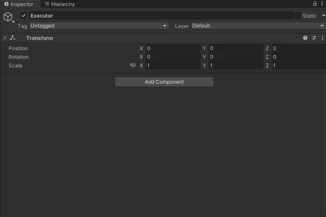

Runtime Generation
The same graphs you preview in the editor run in your game. The Procedural Graph Executor component is the easy path to live objects. The runtime API gives you the raw ElementSet when your own systems consume the result.
The Procedural Graph Executor
Add Procedural Graph Executor to a GameObject, assign a graph, and set its parameters in the Inspector.
| Setting | What it does |
|---|---|
| Generate On Enable | Runs when the component becomes active. |
| Generate In Edit Mode | Also generates outside Play Mode. It turns on and locks Generate On Enable. Disable it first to change that setting. |
| Execute as Async | Yields supported work to keep Unity responsive. See Sync vs async. |
| Pass Transform data | Sends this object's position, rotation and scale into Main Input. See Assemblies and placement. |

In Edit Mode, spawned prefabs keep their prefab connection and regeneration removes the replaced instances. Pooling is only used in Play Mode and player builds.
Generate from code
Turn Generate On Enable off when gameplay should decide when to generate. That leaves a clean moment to set parameters first.
using System.Threading.Tasks;
using CuriousTrove.OctoShaper;
using UnityEngine;
public sealed class DungeonBuilder : MonoBehaviour
{
[SerializeField] private ProceduralGraphExecutor executor;
private void Start()
{
executor.GenerateOnEnable = false;
executor.TrySetParameterOverride("Rooms", 12);
executor.Evaluate(); // synchronous
}
public async Task RebuildAsync(int seed)
{
if (executor.TrySetParameterOverride("Seed", seed))
await executor.EvaluateAsync(); // asynchronous
}
}
Evaluate()/EvaluateAsync()are the 1.2 names.GenerateSync()/GenerateAsync()still work.- Don't start overlapping evaluations on one component, and don't block with
.Wait()or.Result. - The full override API is on Runtime parameters.
Output and spawned instances
executor.Output is the final ElementSet. It belongs to the executor: don't dispose it, and don't keep it across regeneration, clearing or destruction.
To initialize spawned prefabs from their row data, implement IUnityInstanceSpawnReceiver.OnUnityInstanceSpawned(UnityInstanceSpawnContext) on a component of the prefab. See GameObject callbacks. The executor's InstanceSpawned event lets other systems observe spawns.
Data-only execution
When another system consumes the result, run the graph without the component. It evaluates data only and creates no scene objects by itself.
using System.Threading.Tasks;
using CuriousTrove.OctoShaper;
using CuriousTrove.OctoShaper.Core.Data;
using UnityEngine;
public sealed class HeightSampler : MonoBehaviour
{
[SerializeField] private ProceduralGraph graph;
public async Task<ElementSet> SampleAsync()
{
var configuration = new ProceduralConfiguration(); // overrides go here, see Runtime parameters
using var context = OctoShaperRuntime.CreateExecutionContext(graph);
var executor = OctoShaperRuntime.CreateExecutor(graph); // GeneratedStrict by default
await executor.ExecuteAsync(context, configuration);
var output = (ElementSet)context.GetSlotValue(graph.MainOutputSlotId);
return (ElementSet)output.Clone(); // the caller owns and disposes the clone
}
}
- Create and dispose the context on Unity's thread.
CreateExecutor(graph)uses generated code (GeneratedStrict), so run Generate Graph Code first. PassOctoShaperExecutorMode.Interpretedto run without it.- If the output references generated meshes, keep them alive with a
MeshLeaseScope:scope.Resolve(output)returns a clone that retains its meshes. Dispose both the clone and the scope when you're done. Never destroy generated shared meshes yourself.
Validate before you ship
OctoShaperValidation.Validate(graph) checks a graph against the runtime execution path without running it:
var result = OctoShaperValidation.Validate(graph);
if (!result.IsValid)
foreach (var issue in result.Issues)
Debug.LogWarning($"{issue.Code}: {issue.Message}");
Which runtime surface?
| You need | Use |
|---|---|
| Live objects in a scene, regenerated by gameplay | Procedural Graph Executor |
| Raw data for your own systems | Data-only execution |
| A fixed result stored in the project | Procedural prefab |
Before running in Play Mode
- Run Tools > OctoShaper > Generate Graph Code after changing graphs, and let Unity compile.
- Check that Main Output carries what your consumer expects: spawned prefabs, draw rows or plain data.
- Keep editor-only state out of graphs meant for runtime.
Frequently asked questions
Do I need to generate graph code for runtime?
OctoShaperExecutorMode.Interpreted can run data-only execution without generated code, but procedural prefab imports always need it.Can I keep the output after regenerating?
Output belongs to the component and is replaced on the next generation. Clone what you need, and use MeshLeaseScope if the clone references generated meshes.Evaluate or GenerateSync?
Evaluate() and EvaluateAsync() are the 1.2 names and simply call GenerateSync() and GenerateAsync().